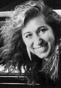

|  |
Gail Niwa continues to thrill audiences as she did at the 1991 Gina Bachauer International Piano Competition where she became the only woman to win the Gold Medal. She also captured two additional awards, the Audience Prize and the Chamber Music Prize. She made her New York recital debut at Alice Tully Hall in October 1991. Ms. Niwa won high praise for her recent recitals at Orchestra Hall in Chicago, on the Allied Arts Piano Series, and at the Ambassador Auditorium's Gold Medal Series in Pasadena. She also received outstanding reviews for her solo appearances with the Chicago Symphony Orchestra in February 1995, performing the Schumann Piano Concerto with Sir Georg Solti conducting.
Among her solo engagements are performances with the Utah, Memphis, Fort Wayne, Augusta, Columbus, Reno, Evanston and Grant Park Symphonies. Ms. Niwa has won major prizes in the International Chopin Competition, the Mae Whitaker Competition and the Washington Kennedy Center and in Athens, Montreal, Seoul, St. Louis and Kansas City and has toured Scandinavia and the Far East. An outstanding ensemble player, Ms. Niwa won the prestigious Best Accompanist Award at the 1986 Tchaikovsky Competition for Violinists in Moscow. She has been featured soloist with the Kammergild Chamber Players, the Banff Festival Chamber Orchestra, the Highland Park Strings and the Ocean State Chamber Players.
The daughter of professional musicians, Ms. Niwa was born in Chicago. She began piano studies with her mother and made her orchestral debut with the Chicago Symphony Orchestra at age eight. She earned her Bachelor and Master of Music degrees on scholarship at the Juilliard School as a student of Adele Marcus. Currently residing in New York City and Vernon, New Jersey, Ms. Niwa can be heard with violinist David Kim on recordings for the musical Heritage Society and Teldec labels.
|